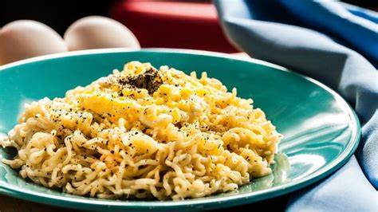

Como fazer Miojo
Passo a Passo:
- Escolha um pacote de miojo com o sabor que você gosta (como tomate, galinha, carne, picanha ou picante).
- Ferva uma xícara de água em uma panela.
- Adicione o macarrão cru e o tempero do pacote na água fervente.
- Mexa para dissolver o tempero e cozinhe o macarrão por 2 a 3 minutos.
- Sirva e aproveite! 🍜
Complemento
| Ovo Poche |
Vegetais Frescos |
| Queijo Ralado |
Cebolinha e Coentro |
| Molho de Soja |
Gergelim |
